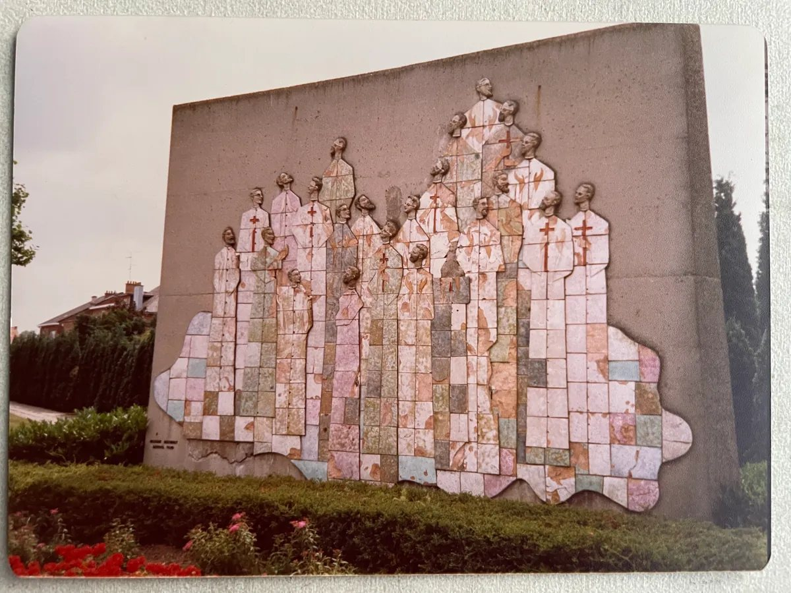
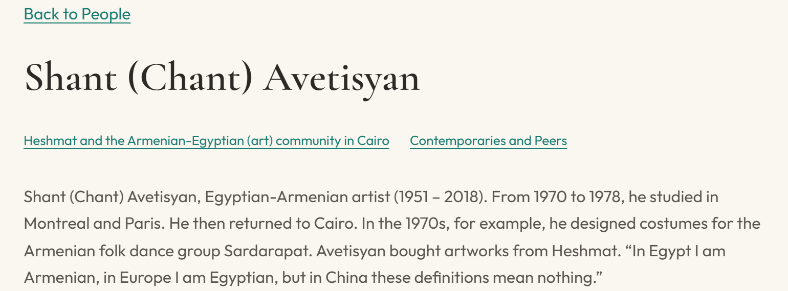
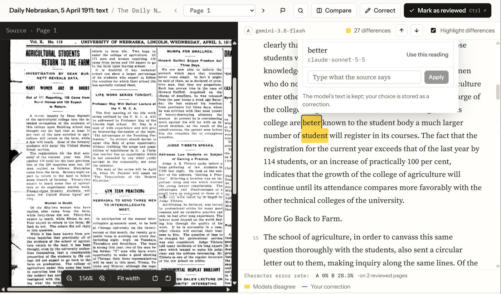

Digital Humanities and AI in the Social Sciences
Datafication in practice
Religion and Intellectual Culture Unit
12 November 2026
This session looks back at what our unit has done with digital methods and AI over the past year. We have organised it around one process that all of this work depends on: datafication, or what happens when a source becomes data.
We take it up through three projects from the unit. Sonja presents Global Heshmat. Abdoulaye and I present the sermons of Albani Zaria: I cover the method, and he covers what he observes in them. Max then presents his work on fictionalization, which deals with material that should not become data.
I’ll start with the framing, which comes out of my own work this year: two workshops prepared here at ZMO, the position paper that followed, and some of the tools I have been building. After the three cases, we open the discussion.
Overview
Framing: two workshops and a position paperGlobal Heshmat: a sculptor's works on a mapDatafication and AI: where the time goes, and Kalamu, a tool to check the resultAlbani Zaria's sermons: youth and politics, and the choices behind the countsAlgorithmic Authorities: a ZMO funding applicationThe Global South and data: who digitises, who profits, who is left outFictionalization and anonymity: when sources should not become dataQuestions for the discussion: method, governance, limits
That is a lot for one session, so each project is shown briefly. The aim is to give us material for the discussion.
Each case raises a different kind of decision. With Global Heshmat, it is how to represent objects, their movements and their absences. With the Albani Zaria sermons, it is how to build the categories we search and count with. With fictionalization, it is when to limit what can be linked and identified.
One question runs through all three, and I’ll come back to it after each case: what is decided, and by whom, when a source becomes data?
Framing
Where this comes from, and what datafication means
Many of us talk about our sources, or our material, rather than our data. A source has an author, a context and a history, whereas data tend to look as if they were simply given. This first part is about the move from one to the other. I start with where my own work on it comes from.
Two workshops
Both funding applications prepared at ZMO
Charting New Territory
Scoping workshop · VolkswagenStiftung
Convened with Vincent Hiribarren (King's College London)
26 researchers from 16 countries
Working groups and World Café rounds instead of keynotes and panels
Towards Sustainable and Equitable Practices
DFG Programme Point Sud · STIAS
Convened with Vincent Hiribarren, Emmanuel Ngue Um and Menno van Zaanen
25 papers, 33 participants from 17 countries
Hybrid, in English and French
This year I organised two workshops on digital humanities and AI in African studies. I wrote both funding applications last year, while I was here at ZMO.
The first was in Hanover in February, a scoping workshop funded by the VolkswagenStiftung, which I convened with Vincent Hiribarren of King’s College London. It brought together twenty-six researchers from sixteen countries: linguists, historians, anthropologists, archivists, AI governance specialists and DH practitioners. Instead of keynotes and panels, we worked in groups and World Café rounds.
The second was in September at STIAS in Stellenbosch, a DFG Point Sud workshop convened with Vincent, Emmanuel Ngue Um and Menno van Zaanen. It had twenty-five papers and thirty-three participants from seventeen countries, and it ran in English and French.
What came out of them
Position paper: “For Whom and For What Purpose?” (ZMO Programmatic Texts , 2026)
Language technologies: “low-resource” describes the data, not the languages; licences that return value to speakersArchives: who owns a document, its copy and its metadata; agreements reopened for AI usesInfrastructure and governance: access is more than connectivity; sovereignty is setting a system's rulesEpistemologies and ethics: African and decolonial thought at the centre; ethics as a process
Next
A special issue in preparation
Journal of the Digital Humanities Association of Southern Africa (JDHASA)
Articles drawn from the Stellenbosch papers
The Hanover participants wrote a position paper together, published open access in September in the ZMO Programmatic Texts series. Its title is its question: for whom, and for what purpose, do we do DH and AI work in African studies?
The paper follows the workshop’s four working groups. The language group argues that “low-resource” describes the data that has been collected, not the languages themselves, and it looks at licences that return value to the speakers. The archives group asks who owns a document, its digital copy and its metadata, and proposes agreements that can be reopened, for instance to cover AI uses nobody foresaw when they were signed.
The third group, on infrastructure, governance and access, defines access as more than connectivity, and sovereignty as the power to set a system’s rules. The fourth, on epistemologies and ethics, argues that African and decolonial thought belongs at the centre of both fields, and it treats ethics as a process.
Most of the problems the paper lists also exist in the Global North; African contexts make them more visible.
We also wanted what the workshop produced to be reusable. The workshop website has the bibliography, 217 references, a map of 145 concepts that links them, and six video interviews with participants on what digital humanities and AI change for African studies.
Next, the Stellenbosch papers are being prepared as a special issue of the Journal of the Digital Humanities Association of Southern Africa.
The paper asks for whom and for what purpose. The rest of this session asks the same thing at a smaller scale, one source at a time.
From source to data
Machine-readable: a form a computer can search, sort and count
Archive photographs
As they are: images; the computer sees pixels, not words
As data: their text, plus fields such as date, author, place
A recorded interview
As it is: sound, searchable only by listening
As data: a transcript, with speakers and timestamps
A field notebook
As it is: handwriting, often legible only to its author
As data: typed text, tagged by person, place and theme
Each conversion chooses what is kept, how it is named, and what is left out.
Before the theory, a basic point. A computer does not read a source the way we do. A photograph of an archive page is, for the computer, an image: pixels, no words. A recorded interview is sound, and you can only search it by listening. A field notebook is often legible only to the person who wrote it.
To search, link or count them, we have to give them a machine-readable form: the text of the page, a transcript of the interview, typed notes, and fields such as date, place, people or theme. AI now does much of this conversion, but someone still chooses what is kept and what it is called.
Datafication
Selecting and structuring sources so that they can be searched, linked and counted
Drucker 2011 Data are capta: taken, not given
Gitelman (ed.) 2013 “Raw data” is an oxymoron
van Dijck 2014 Datafication as a paradigm shift in knowledge production, and the belief in data it fosters
Mejias & Couldry 2019 The quantification of social life, whose appropriation they call data colonialism
Question for today: what is decided, and by whom, when a source becomes data?
This process has a name: datafication. Our working definition for today is selecting and structuring aspects of sources so that they can be searched, linked and counted. It covers different operations. Scanning a page, defining a category such as “youth”, and letting a company train on a corpus raise different questions.
The four references do different work. Drucker and Gitelman make an epistemological point: data are constructed, selected and situated; Drucker calls them capta, things taken. Van Dijck follows how datafication turns into dataism, the belief that data simply mirror the world. Mejias and Couldry look at power: the infrastructures that quantify social life, and who appropriates the value. In their analysis appropriation is what makes it data colonialism, so not every dataset falls under that term.
Hence the question for today: what is decided, and by whom, when a source becomes data?
One object, two forms
A memorial in Hasselt, Belgium, and its record in the Global Heshmat code

Hasselt memorial, 1970 (historical photo, Global Heshmat)
// artworks/018-Heilig Kruiskerk.ts
const artwork: Artwork = {
id: 18,
slug: "heilig-kruiskerk",
name: 'Heilig Kruiskerk',
lat: 50.92058026384286,
lng: 5.325863864013154,
country: 'Belgium',
city: 'Hasselt',
status: 'located',
trails: ['east-west', 'faith-remembrance'],
address: 'Kruisherenlaan 29, 3500 Hasselt',
desc: 'In memory of 23 Belgian missionaries murdered
in Buta (Congo) in 1965, Hassan Heshmat was …',
images: [{src: "Mahnmal_Hasselt_Kopie.jpg",
caption: "Mural next to the Heilig Kruiskerk"}, … 7 more],
links: [{label: 'KADOC',
url: 'https://kadocheritage.be/items/show/11473'}]
};
A first answer, on a single object. On the left, a memorial Hassan Heshmat built in Hasselt, Belgium, in 1970. The Order of the Holy Cross commissioned it in memory of twenty-three Belgian missionaries killed in Buta, Congo, in 1965. He made the ceramics in his Cairo workshop and flew them to Belgium.
On the right, the same work in the code of the Global Heshmat website. Each work is one file: an identifier, coordinates, an address, a status, the thematic trails it belongs to, a short description, eight photographs and a link to the KADOC archive in Leuven.
Between the two, someone decided which fields exist, what counts as “located”, which trail a work belongs to, and how its story fits in a few lines.
[Sonja takes over]
Global Heshmat
Following Hassan Heshmat's works around the world
Global Heshmat
Egyptian sculptor Hassan Heshmat (1920–2006) · a project by Sonja Hegasy
29 works located
13 still to be found
160 photographs
31 people profiled
46 entries, each with its own page: story, photographs, sources, a citable address
Missing works keep their entries, with a public call to report them.
What the mapping showed, and what it took
31 profiles from Sonja Hegasy's research, and the decisions behind the site
What the mapping showed
An unexpected cluster: Heshmat's ties to the Armenian community in Cairo.

One file per work
Each work and each person is one file: adding a work does not need a developer
Statuses
Located, to be found, relocated: a work's history becomes a field and a line on the map
Names and scripts
Search ignores Arabic vowel marks and accents, but each name still takes one chosen spelling
After the project
Who maintains the record, and who in Egypt can correct it?
Datafication is where the work is
Most of the time goes into turning sources into data; analysis comes after
Datafication find · scan · transcribe · correct · describe · link
Analysis visualise · count · compare
AI shortens the first part considerably
Reading text
Manuscripts, typescripts and print, in several scripts
Transcription
Interviews, lectures and sermons, with speakers told apart
Names
People, places and organisations picked out, ready to link
Its own problems: errors that read well, bias, cost, and extraction (whose data trains the models, and who profits?)
[After Sonja] Back to the question. In Global Heshmat the decisions concerned fields, statuses and spellings, and one remains open: who maintains the record, and who in Egypt can correct it?
A general point before the second case. Most of the time goes into datafication: finding the sources, scanning, transcribing, correcting, describing, linking. The visualisations and analyses that people picture as digital humanities come comparatively quickly afterwards.
AI shortens that first part considerably. It reads text from manuscripts and print, transcribes interviews and sermons, and picks out the people and places so that they can be linked. It brings its own problems. Its errors read well, so they are hard to spot. And it raises the question of extraction: whose texts and voices train the models, and who profits. We come back to that in the last part.
Kalamu
A desktop app I am developing: AI-assisted datafication you can check and trace

The source beside the AI's text; highlighted words are where two models disagree
Read scanned and handwritten documents
Transcribe interviews, in the cloud or offline
Analyse texts with fields you define: people, places, themes
Check every result against its source; corrections never overwrite the AI's text
Export with a record of model, prompt and settings
If AI does part of this work, the researcher needs a way to check it and to say how it was done. That is what Kalamu is for. It is a desktop app I am developing; the name is Swahili for “pen”, from the Arabic qalam.
It reads scanned and handwritten documents, transcribes recordings in the cloud or offline, and analyses texts with fields you define. Three functions matter for today’s argument. Every result is shown beside its source. On the screenshot, the scanned newspaper page is on the left and the AI’s text on the right. The words in yellow are where two models disagree, which tells you where to look first. Your corrections are stored apart, so the AI’s text is never overwritten. And every export records the model, the prompt and the settings, which you can cite in a methods section.
One practical point: sensitive material should not go through commercial services. Use the offline mode, or keep it out.
[Abdoulaye takes over for Albani Zaria]
Albani Zaria's sermons
From DVD to an interactive dashboard: Hausa sermons in the Islam West Africa Collection (IWAC)
Who was Albani Zaria?
Muhammad Auwal Adam Albani Zaria (1960–2014)
Born Zaria, northern Nigeria, 27 September 1960
Educated Barewa College, Zaria
Role Salafi scholar and Qur'anic exegete; taught at Daarul Hadeethis Salafiyyah, Zaria
Languages Taught in Hausa, quoting Arabic
Died Assassinated in Zaria, 1 February 2014
45 recordings in IWAC, c. 1999–2014; 42 transcribed: 145 h, about 1.1 million words. They include the lessons he gave on the day of his death.
Catalogued for IWAC by Vincent Favier and Aleksei Akseshin
Every step is a decision
A word list is a classification scheme
islam.zmo.de · Albani Zaria's sermons · how the figures are made
Open ↗
Spelling. Hausa is written with and without hooked letters (ɓ, ɗ, ƙ): variants count as one word
Common words. 76 published Hausa stop words (Bashir, Bichi & Adamu 2024) and 195 added for this corpus are left out
Formulae. sallallahu alaihi wa sallam , in sha Allah : counted as whole phrases, outside the word lists
Loanwords. addini , shari'a , ilimi : Arabic words that count as Hausa
Meaning. sarki (king, emir) is not counted where it means God: 1,184 of 2,094 uses
Speakers. Voices are told apart only within each 20-minute segment
[Frédérick: the method. The diagram animates when the slide opens; “Replay animation” in the full exhibit runs it again.]
Abdoulaye and I split this case. He tells you what he observes in the sermons, and my part is how the figures are made. What you see on screen is an interactive dashboard on the IWAC website. It is public, and the panels on these slides are live.
Five stages take the recordings to figures and passages. An AI model transcribes the recordings and cuts them into twenty-minute segments. After that, each stage involves choices that decide what the counts say.
Spelling comes first. The transcripts write Hausa with and without the hooked letters, so variants are merged into one word. Then common words: we leave out a published list of seventy-six Hausa stop words, plus 195 that we added for this corpus.
Meaning is the hardest. Sarki means king or emir, but in “Allah Maɗaukakin Sarki” it means God. A rule leaves sarki out when Allah or maɗaukakin comes just before it, which removes 1,184 of its 2,094 uses. The rule only looks at the neighbouring words, not at the meaning, so it will miss other ways of naming God. Ambiguous words such as ƙasa, “country” or “to fail”, are shown but kept out of the totals.
All of this is exploratory. The word lists and the translations are drafts, and no Hausa specialist has checked them yet. Abdoulaye will do that, in sha Allah. [smile] So in this case the decisions are categories, and so far we have made them without that check.
[Abdoulaye continues with what he observes]
Where youth meets politics
A meeting: a youth term and a political term within ten words, same speaker
islam.zmo.de · Albani Zaria's sermons
Open ↗
Most frequent pairs: yara (children) × sarki (king, emir), 13; yara × jihadi (jihad), 12; 'ya'ya (offspring) × sarki , 11; almajirai (Qur'anic pupils) × sarki , 11
89 segments contain at least one meeting; the exhibit ranks them and links each to its 20 minutes of audio.
Three in four uses of demokuraɗiyya (201 of 263) come from a single lecture, Demokuradiyyah (9 h 33).
The count points to the 20 minutes worth hearing; the analysis comes from listening to them.
Exploratory: draft word lists, not yet checked by a Hausa specialist. A meeting is a co-occurrence; quotation, negation or a set phrase can produce one.
Read the passages
On the exhibit page, every count leads back to the words it comes from
islam.zmo.de · Albani Zaria's sermons · youth theme
Open ↗
1 Pick a term or search the lines: 1,814 for the youth list
2 Read it in context the term highlighted in its sentence
3 Go to the recording each line links to its 20-minute segment
4 Public text only drawn from transcripts already public on IWAC
A ZMO funding application: Algorithmic Authorities
AI, disinformation and knowledge production in the Global South
Method: AI as a DH research tool
Open models run locally; workflows for low-resource languages and non-Latin scripts; always alongside archive and field research
Analysis: who counts as an authority
How algorithmic mediation reshapes epistemic authority in Farsi, Hindi, Hausa and Swahili, and in local Arabic, French and English
The core: a loop
Findings from AI analysis go back to the field, where they are checked or revised; the revision shapes the next method.
A Leibniz strategic extension (Sondertatbestand). Groundwork: IWAC, Albani Zaria's sermons, the Islam East Africa Collection (in preparation). It answers the Leibniz Senate's 2023 recommendation to strengthen ZMO in digital methods.
[Frédérick, after Abdoulaye]
Before we turn to the stakes, a word on where this could lead at ZMO. The institute is preparing a funding application for a Leibniz strategic extension, a Sondertatbestand, called Algorithmic Authorities. It has two strands. The first uses AI as a research tool, with open models run on our own machines and workflows for languages and scripts that current models handle badly. The second analyses how algorithms change who counts as an authority.
What I would stress is the loop. Earlier I presented datafication as a line, from sources to data to analysis. Here, what the AI analysis finds goes back to the field, where it is checked or revised, and that revision shapes the next method. The sermons show why this matters: the word lists are still waiting for Abdoulaye’s check.
The groundwork is what you have just seen: IWAC, the Albani sermons, and an East African collection in preparation.
Stakes and limits
Who gains from datafication, and what should not become data
Back to the question once more. In the sermons, the decisions were categories: which words count as youth, which as politics, and when sarki means God. Those categories are still unchecked.
This last part has two slides from me on who gains from datafication, then Max’s presentation on material that should not become data, and then the questions.
The Global South and data
Digitisation and AI can reproduce older asymmetries
Who digitises
Mostly Northern institutions or private firms: “digital imperialism” (Breckenridge 2014), a “digital saviour complex” (Shringarpure 2020)
What gets digitised
Selection deepens archival silences; keyword search sidelines what is not online
Who has access
The digital divide: unequal internet access remains a major obstacle (Barringer & Wallace 2014)
Data extractivism
Scraped texts and voices, and annotation outsourced to Kenya and elsewhere, feed a few firms' models
Data flaring
The reverse problem, neglect: African-language data under-collected, poorly kept, little used (Adebara 2025)
The tension between them
More African-language resources are needed; some conditions of their collection should be refused
Back to our cases: who corrects a Heshmat record, validates the Hausa lists, withdraws a transcript?
To open this part, a step back, drawn from my work on IWAC and from the workshop literature.
Most digitisation of African material has been funded by Northern institutions or run by private firms, and it tends to reproduce colonial hierarchies of access. What gets selected deepens archival silences, and keyword search sidelines whatever is not online.
AI adds two problems that can coexist. The first is extraction, which Couldry and Mejias’s data colonialism already pointed to: texts and voices are scraped into training data, and annotation is outsourced to low-paid workers, some of them in Kenya, for models owned by a few firms. The second is neglect. Ife Adebara speaks of language data flaring, after gas flaring. African languages are spoken every day on the radio and at religious gatherings, but nobody collects or keeps that speech. That is why they stay “low-resource”, meaning that models have little to learn from.
So we may need more language resources while refusing some of the conditions of their collection. In IWAC we follow two sets of principles, FAIR for open data and CARE for Indigenous data governance. We catalogue rather than digitise where custodians prefer, and we credit rights holders. The questions at the bottom bring this back to our own cases.
The dialectics of datafication
Which datafication helps, which damages, and which endangers?
The counter-position
Our cases make sources findable and linkable. Some fieldwork has to prevent exactly that, so that interlocutors do not end up in prison.
One answer: dispersing data points so that they cannot be mapped.
It depends less on the discipline than on
the material: archived texts or living interlocutors
the relation with the people the data describe
the purpose, and what disclosure would cost them
Under what conditions does fieldwork become extractive, and what does AI change?
The Albani dashboard takes one position on this. Every transcript feeds the counts, but passages are quoted only from transcripts that are already public on IWAC. Public text does not settle everything, though. Once it is aggregated and searchable, it has a visibility it did not have before.
Some material calls for the opposite move. Max’s interlocutors could end up in prison if they were identified, so his method works to keep them from becoming data points at all.
Which of the two applies depends less on the discipline than on the material and on the people it describes. In our planning meeting a colleague said that fieldwork is already extraction. I would rather ask under what conditions it becomes extractive, and what AI changes in speed and scale.
[Max takes over]
Method of Fictionalization and Anonymity
Because: not everything should become data (from an anthropological perspective)
If it endangers one’s interlocutors (state/legal/vigilante/troll persecution)
If it could create social difficulties for one’s interlocutors (e.g. possible divorce)
If it doesn’t require recognition of some publicly relevant quality of one’s interlocutors
Contextual Dispersal
Fictionalization as Rigorous Method
Fictionalization distributes actions over several characters and alters the locations and times that come up in the account. Contextual dispersal disperses personae, texts, time, and space by balancing contextual integrity against safety.
Personae Texts Time Space
Fundamentally opposed to a license to invent — every detail must be thought through as a potential data point.
Two axes, four disclosure decisions
Risk level
High
Low
Describe in full High risk, low identifiability. The tactic can be told in rich detail.
Fictionalize / redact High risk and high identifiability. Protect the person before the detail.
Openly shareable Low risk, low identifiability. Report freely.
Generalize Low risk but identifying. Aggregate away the specifics.
Low Identification level High
Reading the grid
Identifiability decides how much can be told; risk decides how much care the telling demands. The dangerous-but-anonymous cell is where fictionalization earns its keep — the practice survives, the person disappears.
A five-tier grading of strategies
Each strategy sits on a scale of exposure — from primary witnessing at the sharp end to durational poetry at the safe end.
C Critical Direct public witnessing Physically documenting violence as a primary news source. Triggers immediate state and vigilante response.
Bilal H High Hyperbolic framing Charged or polemical terms that can be legally cast as “inciting communal passions.”
Hamid, early M Moderate Global framing Using X to reach international media — it brings security, but also labels like “antinational.”
Hamid, Hilal L Low Strategic evasion Mass-blocking and avoiding hashtags or mentions to stay out of hostile ecosystems.
Hilal, Bilal V Very low Poetic reframing Moving from reactive tweets to reflexive, durational poetry that is hard to co-opt.
Hamid
Questions for the discussion
Method What checks would make categories such as the Hausa word lists usable for analysis?
Governance Who can correct, contest or withdraw a representation?
Limits When should links between people, places and texts be made visible, and when should they be impossible to reconstruct?
[Frédérick, after Max. Leave this slide up during the discussion.]
The three questions follow the cases: validation from the Albani sermons, governance from Heshmat and the sermons, limits from Max’s presentation.
If the room is quiet: Who should check the Hausa word lists, and how would we know they are good enough? Should recordings like these go through commercial AI services? Who can ask for a transcript to be withdrawn, and who pays for the upkeep once the project ends? What does building one’s own categories teach that automatic labelling skips?
Two more projects to explore
ZMO Visualisations
ZMO as data: 1,985 publications by 671 authors, 1994–2026
zmo-berlin.github.io/visualisations
Open ↗
Genocide at the Security Council
How is the word used in 182,684 UN Security Council speeches, 1946–2026?
fmadore.github.io/genocide-at-the-security-council
Open ↗
[Annexe: only if there is time or someone asks.]
ZMO Visualisations treats the institute as data: a word cloud of what each research unit writes about, and a dashboard of the publication register where every chart is also a filter. Researcher bylines are dropped so that names do not become terms.
Genocide at the Security Council, with Joël Glasman, follows the word through the Council’s speeches. An open-weight model, run on hardware we control with its version and prompt recorded, labels each mention, and a second model gives a comparison. The labels are a preview: the human-coded sample that will test them is not coded yet. When two models agree, the labels are stable; whether they are right still needs that sample.